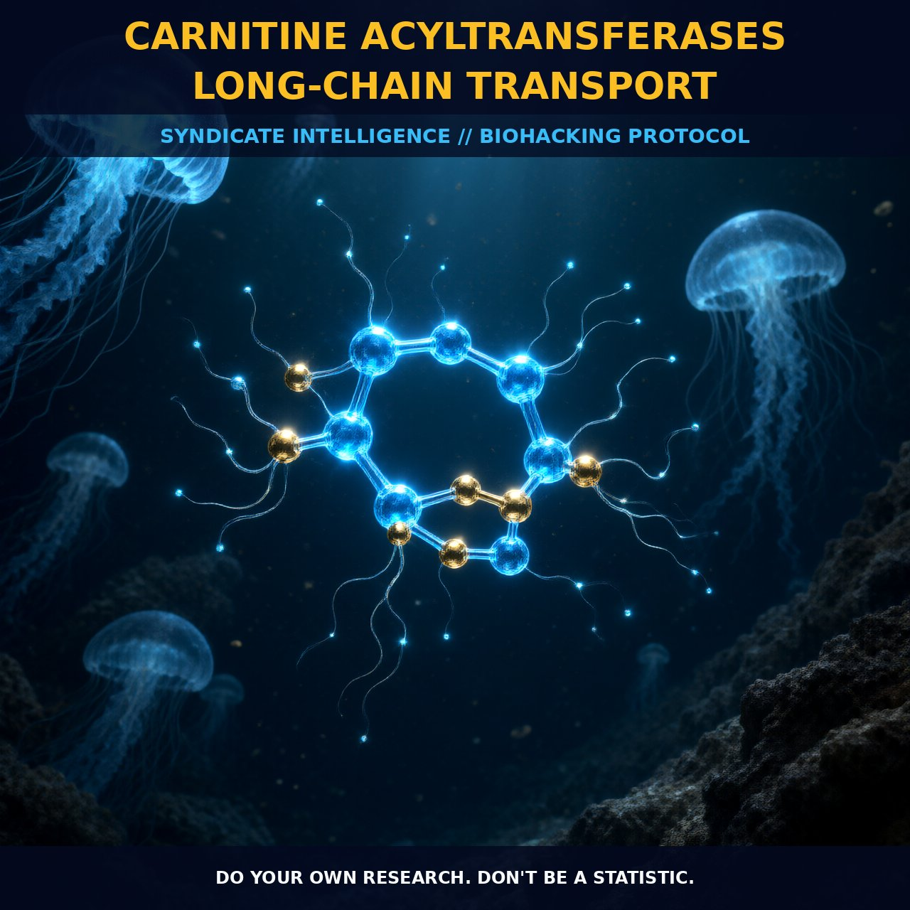

Optimizing Energy Metabolism with Carnitine Acyltransferases

1. The Mechanism
Carnitine acyltransferases play a critical role in the transport of long-chain fatty acids into the mitochondrial matrix, where they undergo beta-oxidation to generate ATP. This process involves the sequential action of three enzymes: carnitine palmitoyltransferase-1 (CPT-1), carnitine-acylcarnitine translocase (CACT), and carnitine palmitoyltransferase-2 (CPT-2).
CPT-1, located on the outer mitochondrial membrane, catalyzes the conversion of long-chain acyl-CoA esters to acyl-carnitine esters. These acyl-carnitine esters are then transported across the inner mitochondrial membrane by CACT. Once inside the mitochondrial matrix, CPT-2 converts the acyl-carnitine esters back to acyl-CoA esters, allowing them to enter the beta-oxidation pathway. This shuttling mechanism is essential for the efficient utilization of long-chain fatty acids as an energy source in the mitochondria.
The transport of long-chain fatty acids across the mitochondrial membrane is a regulated process. Malonyl-CoA, a metabolite derived from carbohydrate metabolism, acts as a potent inhibitor of CPT-1, thereby controlling the entry of fatty acids into the mitochondria. This regulation ensures that fatty acid oxidation is coupled with the availability of carbohydrate-derived substrates, facilitating the efficient use of both energy sources.
Additionally, the activity of CPT-1 is modulated by various factors, including hormonal influences and metabolic states such as fasting and exercise, which can influence the rate of fatty acid oxidation.
2. Biological Leverage
Carnitine acyltransferases play a pivotal role in energy metabolism, particularly in tissues with high energy demands, such as skeletal muscle, heart, and liver. These enzymes ensure the continuous supply of long-chain fatty acids to the mitochondria, where they are oxidized to produce ATP. This is especially critical during periods of high energy expenditure, such as intense exercise or fasting, when fatty acid oxidation is the primary source of ATP.
Moreover, the acylcarnitine shuttle also plays a role in regulating cellular metabolism by modulating the availability of acetyl-CoA. Acetyl-CoA, derived from the beta-oxidation of fatty acids, is a key substrate for the citric acid cycle, the central metabolic pathway for energy production. The balance between acetyl-CoA and malonyl-CoA is critical for the regulation of fatty acid oxidation and glucose metabolism.
When acetyl-CoA levels are high, such as during fasting or exercise, the acylcarnitine shuttle facilitates the rapid uptake of fatty acids into the mitochondria, ensuring a continuous supply of acetyl-CoA for energy production.
3. Tactical Implementation
For biohackers and nootropic users, enhancing the function of carnitine acyltransferases can provide significant metabolic benefits. Supplementing with acetyl L-carnitine (ALCAR) is a common strategy to boost mitochondrial function and support fatty acid oxidation. A typical dosage range for ALCAR is 500 to 1,500 mg per day, taken in divided doses, preferably with meals to enhance absorption.
ALCAR is particularly effective when used in conjunction with other nootropics, such as alpha-GPC, which supports acetylcholine synthesis, further enhancing cognitive function.
Timing your ALCAR intake strategically can also enhance its effectiveness. For example, taking ALCAR before exercise can support energy metabolism and enhance performance, as it facilitates the uptake of fatty acids into the mitochondria. Additionally, ALCAR can be beneficial during fasting periods, when fatty acid oxidation is upregulated, helping to sustain energy levels and support ketosis.
However, it is important to note that individual responses may vary, and the optimal dosage and timing should be personalized based on individual metabolic needs and goals.
Prostar Life Hack
Supplement with acetyl L-carnitine (ALCAR) before exercise to enhance energy metabolism and performance. Aim for a dosage range of 500 to 1,500 mg per day, divided into smaller doses throughout the day.
[ AUTHOR: LEAD TECHNICAL RESEARCHER ]